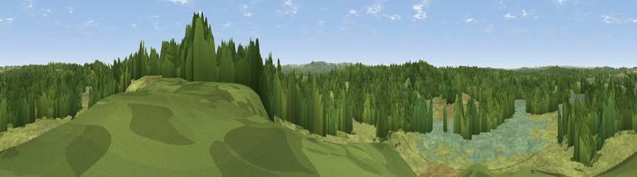

Little Ovens Hill
#33898 in England · top 72% of its area beats it · near SandfordWhere it is
The exact computed spot (SY 91725 90125). Click the marker for map links.
The view, rendered

A 360° render of this exact spot computed from the terrain model, tree cover and land cover — summer colours, afternoon light, calibrated against photographs of famous viewpoints. Real trees, hedges and buildings will differ in detail.
The panorama
Grey silhouette: terrain skyline in each direction (720 bearings, Earth curvature and refraction included). Dashed green: skyline with trees (+15 m) and buildings (+8 m) as obstacles. Blue strip: how far the ground is visible on each bearing.
Where the view opens
Wedge length = distance to the farthest visible ground on that bearing (vegetation-aware). Rings at 10, 25 and 50 km.
What fills the view
51% grassland · 36% woodland · 12% wetland ·
Angular shares of the visible panorama (visual magnitude), not map area. Landscape diversity 0.44 (0–1 Shannon).
Key numbers
More beautiful places nearby
The staircase of upgrades: each row has a higher view potential than everything closer. Driving times are estimates from straight-line distance, calibrated against real road routing — check an actual route before setting out.
| Place | Direction | Drive | Score |
|---|---|---|---|
| Viewpoint near Holton Heath | ENE · 3 km | ~7 min | 43.3 |
| Woolsbarrow Hill | NW · 3 km | ~8 min | 52.8 |
| Viewpoint near Arne | ESE · 6 km | ~12 min | 55.2 |
| Viewpoint near Upton | NE · 7 km | ~15 min | 61.0 |
| Viewpoint near Kimmeridge | S · 8 km | ~17 min | 82.9 |
| Viewpoint near Kimmeridge | S · 8 km | ~17 min | 84.1 |
| Whiteway Hill | SSW · 10 km | ~19 min | 85.0 |
| Viewpoint near Kimmeridge | S · 10 km | ~20 min | 86.6 |
50.71070, -2.11856 · source: osm peak · position refined by local search. Computed location — check access rights before visiting.